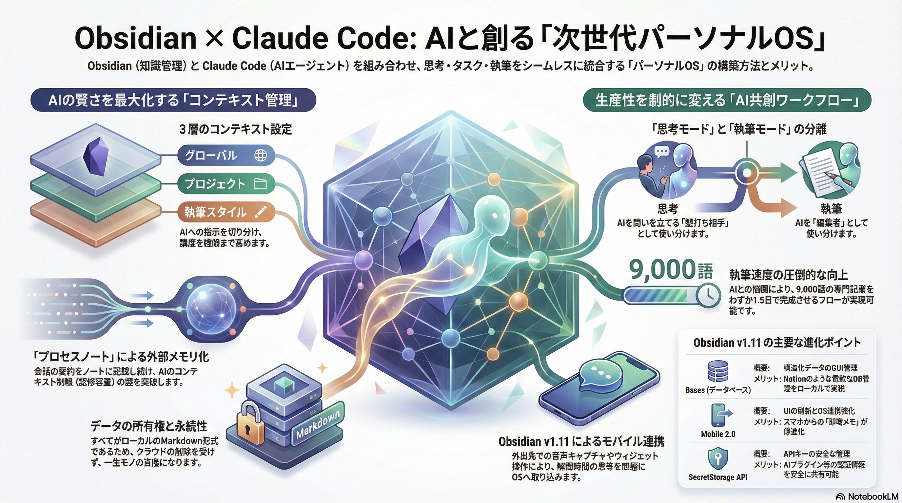

リリース概要
Obsidian 1.11.5 (Early Access)が2026年1月15日頃、Catalystメンバー向けにデスクトップ（Windows/macOS/Linux）とモバイル（iOS/Android）の両方で利用可能になりました。1.11シリーズ全体で特にモバイル版が大幅に進化しており、1.11.5はこれらの機能の安定化やバグ修正を中心としたマイナーアップデートです。
Catalystメンバーとは
開発支援プログラム
CatalystはObsidianの開発を支援するための有料ライセンス（サポーター制度）です:
- Early Access: 正式リリース前の「Insider build」にアクセス可能
- 新機能優先体験: 新機能をいち早く試せる
- 開発支援: Obsidianの継続的な開発を金銭的にサポート
- コミュニティ貢献: フィードバックを通じて製品の改善に貢献
通常ユーザーには安定版として公開されるまでのテスト版が提供されます。
1.11シリーズの主なハイライト
モバイルUIの全面リデザイン
インターフェース刷新
編集・閲覧体験を向上させるためにUIを全面リデザイン。ナビゲーションが画面下部に配置され、スクロール時に自動非表示
操作性の大幅改善
ダブルタップで編集/閲覧モード切り替え、ハプティックフィードバック追加など、直感的な操作を実現
視認性向上
画面領域を最大限活用し、コンテンツに集中できるデザイン
ウィジェット機能（iOS/Android）
ホーム画面から直接アクセス
- ノート作成: ホーム画面やロック画面から即座に新規ノート作成
- 日常ノート: デイリーノートをワンタップで開く
- 検索: 外出先でも素早く情報を検索
- iOS Control Center統合: コントロールセンターからObsidian機能にアクセス
- Spotlight統合: iOS Spotlightからノート検索が可能
音声・ショートカット統合
Siri/Shortcuts（iOS）
声でノート捕捉や検索が可能。"Hey Siri, Obsidianで新しいノートを作成"のような自然な音声操作
Androidショートカット
クイック設定タイルやアプリショートカット追加。ホーム画面から直接アクションを実行
その他の改善
細部へのこだわり
- ハプティックフィードバック: タッチ操作に対する触覚フィードバックで操作感が向上
- ダブルタップ切り替え: 編集/閲覧モードをダブルタップで素早く切り替え
- プロパティにMarkdownリンク対応: メタデータにもリンクを設定可能
- ファイル名変更時の安全警告強化: 誤操作を防ぐための警告機能
- プラグイン自動更新チェック設定: プラグインを最新の状態に保つ
バグ修正（1.11.5含む）
- ウィジェットの動作安定化
- スクロール挙動の改善
- RTL言語（アラビア語、ヘブライ語など）対応の向上
- デスクトップ版の細かな安定性向上
- 多数の小規模バグ修正
パーソナルOS化への道
これらの変更により、Obsidianは単なる「ノート取りアプリ」から、「パーソナルOS（個人向けオペレーティングシステム）」へと進化しています。
パーソナルOS化の兆候
システム統合
OS機能（ウィジェット、Siri、Spotlight、Control Center）との深い統合により、Obsidianが日常生活の中心に
ワークフロー中心
情報の入力、整理、検索、活用までの一連のフローを一つのアプリで完結
マルチデバイス体験
デスクトップとモバイルのシームレスな連携で、いつでもどこでも知識にアクセス
AI統合の可能性
Claude、ChatGPTなどのAIプラグインと組み合わせることで、知的生産性が飛躍的に向上
第二の脳
Zettelkasten、PARA、GTDなどの方法論を実践し、外部化された記憶システムを構築
拡張性
プラグインエコシステムにより、個人のニーズに合わせて無限にカスタマイズ可能
モバイルファーストの時代へ
1.11シリーズのモバイル強化は、以下のような変化を示唆しています:
- 情報捕捉のハードル低下: 思いついたアイデアを即座にメモ
- 外出先での知識活用: 移動中でも過去のノートを参照・編集
- 音声による操作: ハンズフリーでの情報入力が可能
- 生活習慣への統合: 日常的なタスク管理やジャーナリングの中心に
実践的な活用シーン
クイックメモ
ロック画面のウィジェットから即座にアイデアをメモ。思考の流れを途切れさせない
デイリージャーナル
朝のルーティンとして、ウィジェットから今日のノートを開いて一日をスタート
情報検索
Spotlightからノート検索。過去の会議メモや学習ノートを瞬時に参照
音声入力
運転中や料理中でも、Siriを使ってハンズフリーでメモを記録
学習ノート
通勤・通学中にモバイルで復習。リンク機能で知識のネットワークを構築
プロジェクト管理
タスク、メモ、資料を一元管理。デスクトップとモバイルで同期
今後の展望
パーソナルOSとしての進化
Obsidianは、以下の方向性でさらなる進化が期待されます:
- AI統合の深化: ChatGPT、Claude、Geminiなどとのネイティブ統合で、知的生産性が飛躍的に向上
- 自動化機能: Zapier、IFTTT連携によるワークフロー自動化
- コラボレーション: リアルタイム共同編集やチーム向け機能の強化
- 視覚化の進化: ナレッジグラフの3D表示、マインドマップ機能の拡充
- クロスプラットフォーム統合: Windows、macOS、Linux、iOS、Androidでの完全な体験統一
結論: Obsidian 1.11.5は、モバイル体験の革命的な改善により、「第二の脳」から「パーソナルOS」への進化を加速させています。ウィジェット、音声統合、システムレベルの統合により、Obsidianは単なるノート取りアプリではなく、日常生活と知的生産の中心となるプラットフォームへと変貌しつつあります。